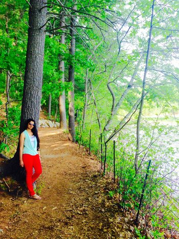
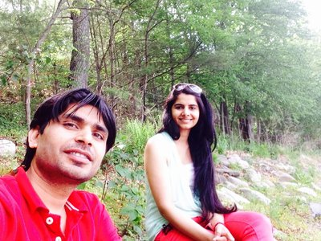

Breakheart Reservation
Open year-round, dawn to dusk. Breakheart Reservation is a 640-acre hardwood forest with jagged, rocky outcroppings, two fresh-water lakes, and a rambling section of the Saugus River. Seven rocky hills, over 200 feet high, provide vistas of Boston, southern New Hampshire and central Massachusetts.
An extensive trail system through the woodlands guides visitors to various areas of the reservation. Fishing in Silver and Pearce Lakes, hiking the trails and birdwatching by the Saugus River are popular year-round activities. The supervised swimming area at Pearce Lake, one of the few fresh- water swimming spots north of Boston, draws crowds in the summer. In addition to its natural resources, the reservation has a rich cultural history.
Trials:
The trials is not that long and difficult. Allow for about 3 hours to complete the hike. Moderate walk.
When to visit:
You can go any time you wish but I recommend going to summer or fall winters on a nice sunny day.
What to bring:
You can bring your food, water, snacks, sunscreen, bug spray, a camera, flashlights, knife, a sweatshirt,
Park Directions
For more info click here